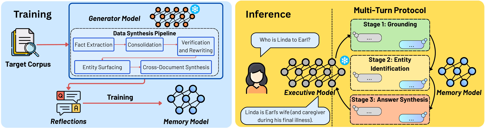

LLMs Are Frozen in Time
Large language models are, at their core, static artifacts. Once pretraining ends, the weights freeze, and so does the world they know. For real applications, this is not merely inconvenient but architecturally limiting: a medical assistant blind to new clinical guidelines, a legal tool unaware of recent rulings, an enterprise system that cannot consult documents that postdate its training cutoff.
Three paradigms have emerged to address this. Non-parametric methods (RAG, In-Context Learning (ICL)) retrieve documents at inference time: flexible, but constrained by context windows, brittle to retrieval noise, and unable to synthesize facts scattered across many documents. Parametric methods (fine-tuning, continual pretraining) bake new knowledge into weights: powerful, but expensive, prone to catastrophic forgetting, and limiting generalization to unseen queries. Latent memory methods compress knowledge into soft tokens or Key-Value cache (KV-cache) artifacts: compact, but shackled by representation coupling, since the memory cannot be reused with any model other than the one that produced it.
MeMo combines all three paradigms' strengths into a single modular framework. It avoids context-window limitations (unlike RAG), prevents catastrophic forgetting (unlike fine-tuning), and decouples knowledge from the reasoning model (unlike latent memory), while requiring zero access to the Executive model's weights, making it compatible with any LLM including closed-source application programming interfaces (APIs).
| Method | Frozen LLM | No Retrieval Index | Black-box | No Forgetting | Const-size Memory | Cross-LLM |
|---|---|---|---|---|---|---|
| Non-parametric (RAG, ICL) | ✓ | ✗ | ✓ | ✓ | ✗ | ✓ |
| Parametric (Continual Pre-Training (CPT), Supervised Fine-Tuning (SFT)) | ✗ | ✓ | ✗ | ✗ | ✗ | ✗ |
| Latent Memory | ✓ | ✓ | ✗ | ✓ | ✓ | ✗ |
| MeMo (Ours) | ✓ | ✓ | ✓ | ✓ | ✓ | ✓ |
Two Models, One Knowledge Interface
MeMo introduces a two-model architecture. The Memory model, substantially smaller than the Executive model, is trained on a synthesized reflection QA dataset derived from a target corpus. It internalizes the corpus's knowledge parametrically and answers sub-queries entirely from its weights at inference time, with no access to source documents. The Executive model (the large frozen LLM) treats the Memory model as an external oracle, querying it through a structured multi-turn protocol to answer user queries.

Data Synthesis Pipeline
Given a target corpus, the Generator model drives a five-step pipeline to produce a reflection QA dataset Qfinal that captures both single-document facts and cross-document relationships. No document identifiers or watermarks are embedded in the generated QA pairs, preventing the Memory model from exploiting shortcut signals at evaluation time.
Why Reflections, Not Raw Documents?
The core insight behind MeMo's data pipeline is the concept of reflections: synthesized QA pairs that act as compositional windows into the corpus. Unlike training on raw text or simple paraphrase pairs, reflections are engineered to capture exactly what makes cross-document reasoning hard: they consolidate facts from multiple chunks, enforce self-containment (no dangling pronouns, no implicit context), and encode entity relationships explicitly in both forward and reverse directions.
Three Stages, One Answer
Naive single-turn querying of the Memory model fails on compositional questions requiring chained reasoning. MeMo's protocol mirrors how a skilled analyst would interrogate an unfamiliar knowledge base, proceeding in three stages:
Continual Integration via Model Merging
When a new corpus arrives, full parametric retraining must process the union of all previous sources, a cost that grows quadratically with the number of corpora. MeMo instead trains a separate Memory model on the new corpus and applies model merging to combine it with existing Memory models. Each Memory model contributes a task vector capturing its parametric shift from the shared pretrained base; these vectors are merged via Trim, Elect Sign & Merge (TIES) with a configurable sparsification density.
For K=2 corpus subsets of ~640k QA pairs each, merging accumulates only X+Y ≈ 48 8×H100 GPU-hours versus X+(X+Y) ≈ 72 8×H100 GPU-hours for full retraining, a 33% reduction. At K=10, the saving grows to 5.5× (240 vs. 1,320 8×H100 GPU-hours), as merging costs scale linearly while full retraining costs scale quadratically.
Beating RAG Where It Matters Most
MeMo was evaluated on three knowledge-intensive benchmarks spanning different reasoning challenges: BrowseComp-Plus (multi-hop retrieval across 300 questions with 3,541 total corpus documents), NarrativeQA (long-document comprehension across books and movie scripts), and MuSiQue (multi-step reasoning across 2–4 Wikipedia paragraphs, 1,000 questions). Results are reported under two Executive models (Qwen2.5-32B-Instruct and Gemini-3.0-Flash) against three retrieval baselines (BM25, NV-Embed-V2, HippoRAG2) and one latent-memory baseline (Cartridges).
| Method | BrowseComp-Plus (%) | NarrativeQA (%) | MuSiQue (%) | |||
|---|---|---|---|---|---|---|
| Q2.5-32B | Gemini-3F | Q2.5-32B | Gemini-3F | Q2.5-32B | Gemini-3F | |
| Perfect Retrieval* | 79.67 | 88.33 | 51.42 | 60.41 | 62.83 | 73.00 |
| BM25 | 1.11 | 27.00 | 10.24 | 14.33 | 20.00 | 23.20 |
| NV-Embed-V2 | 50.67 | 57.00 | 20.59 | 26.62 | 37.47 | 46.60 |
| HippoRAG2 | 56.11 | 66.33 | 21.39 | 23.21 | 42.17 | 57.00 |
| Cartridges | 0.00 | — | 3.75 | — | 8.57 | — |
| MeMo (Ours) | 54.22 | 66.67 | 26.85 | 53.58 | 48.30 | 60.20 |
*Perfect Retrieval is an empirical upper bound. Bold = best among real methods. MeMo Memory model = Qwen2.5-14B-Instruct.
The pattern is unambiguous. On NarrativeQA and MuSiQue, where reasoning requires synthesizing facts distributed across many documents, MeMo dominates all retrieval baselines by large margins. On NarrativeQA, the strongest RAG baseline (HippoRAG2) achieves 23.21% under Gemini-3.0-Flash; MeMo reaches 53.58%, more than double. This is exactly where retrieval systems structurally fail: they can find relevant passages but cannot synthesize coherent answers from content distributed across a full book.
On BrowseComp-Plus, MeMo leads under Gemini-3.0-Flash (66.67%) while narrowly trailing HippoRAG2 under Qwen2.5-32B-Instruct (54.22% vs. 56.11%). This gap is informative: BrowseComp-Plus answers are absent from Executive model pretraining, making direct document access inherently valuable; parametric encoding is at a mild structural disadvantage when answers require verbatim retrieval.
The plug-and-play advantage is quantifiable: upgrading the Executive from Qwen2.5-32B-Instruct to Gemini-3.0-Flash yields gains of +12.45% on BrowseComp-Plus, +26.73% on NarrativeQA, and +11.90% on MuSiQue, with zero retraining of the Memory model. As frontier Executive models improve over time, MeMo's accuracy improves automatically.
Near-Immunity to Retrieval Noise
When an equal number of negative distractor documents is added to the corpus (1×N, where N=1,775 evidence documents for BrowseComp-Plus and N=2,648 for MuSiQue), retrieval-based systems suffer significant accuracy degradation as they struggle to distinguish relevant from irrelevant content. MeMo remains essentially unaffected:
The robustness is structural: the Memory model responds entirely from internalized parametric knowledge at inference time. Noise documents in the retrieval pool have no effect on its weights. The −1.77% drop on MuSiQue falls within standard deviation bounds, in stark contrast to the 4–6% degradations seen in retrieval systems.
Model Merging: The Compute–Accuracy Trade-off
TIES-merging at ρ=0.3 achieves 15.81% versus full retraining's 26.85% on NarrativeQA under Qwen2.5-32B-Instruct, an 11.04% accuracy gap. This is a real cost. However, even the merged model outperforms every retrieval baseline on NarrativeQA, and at K=10 the 5.5× compute saving becomes increasingly compelling for knowledge bases spanning many independent sources updated incrementally over time.
One Thing to Remember
For machine learning (ML) practitioners deploying knowledge-intensive systems: if your use case involves long documents, multi-hop reasoning, or knowledge bases too large to fit in a context window, MeMo offers a qualitatively different architecture. Its three-stage protocol adds per-query overhead compared to single-turn RAG, but the accuracy gains on NarrativeQA (more than 2× over the best RAG baseline) suggest the trade-off is frequently worthwhile.
The plug-and-play compatibility is the sleeper advantage. Train the Memory model once with a weaker open-source Generator, then deploy it alongside GPT-4, Gemini, Claude, or any other frontier model as the Executive. As Executive models improve, accuracy improves, with no retraining required. MeMo inverts the usual dependency: the knowledge store and the reasoning engine are finally independent.
Where MeMo Falls Short
The paper is candid about four structural constraints of the current design:
The five-step data synthesis pipeline and subsequent SFT require substantial one-time compute (~72 8×H100 GPU-hours for the NarrativeQA experiments). Corpora that change frequently will accumulate costs proportional to update frequency.
The Memory model has finite representational capacity. Very large or information-dense corpora may exceed what a fixed-size Memory model can faithfully encode; scaling behavior with corpus size is not yet fully characterized.
TIES-merging trails full retraining by 11%–19% on NarrativeQA. For high-stakes deployments, this accuracy cost may outweigh the compute savings, depending on the number of corpora K and accuracy requirements.
Evaluation covers three English QA benchmarks. Performance on structured knowledge (tables, code, formal logic) or multilingual corpora is not assessed. The multi-turn protocol also introduces per-query latency overhead not present in single-pass RAG systems.
Future directions the authors identify: more efficient memory construction, extensions to dynamically evolving corpora, tighter coordination loops between the Executive and Memory models, and weight-sharing techniques that could eliminate the dedicated Memory model GPU footprint for very large knowledge bases.
Cite this Work
@article{quek2026memo, title = {MeMo: Memory as a Model}, author = {Quek, Ryan Wei Heng and Lee, Sanghyuk and Leong, Alfred Wei Lun and Verma, Arun and Prakash, Alok and Chen, Nancy F. and Low, Bryan Kian Hsiang and Rus, Daniela and Solar-Lezama, Armando}, journal = {arXiv preprint arXiv:2605.15156}, year = {2026} }